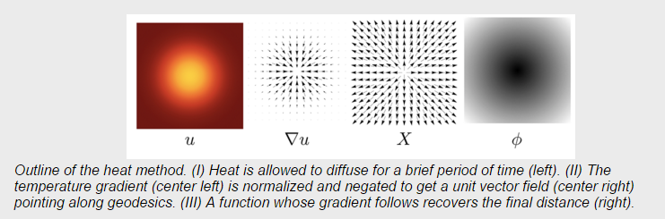

Summary
We are going to parallelize the computation of geodesic distance between points using the heat method, expanding upon a sequential solution. The main focus will be on parallelizing the method for solving linear equations and the computations made to normalize the gradient. To accomplish this, we will use the lateday machine which has a quality GPU and CPU.
Background
The heat method is a new procedure for approximating the geodesic distance of two points, which is the shortest line that connects two points along a curved surface area. The heat method has shown to be simple, easy to implement, accurate, and most importantly it can be applied to virtually any geometric discretization such as grids and meshas.
The simplicity of the method comes from the fact that it mainly requires a solution to two standard linear elliptic problems. Thus, to improve on the current implementation, we need to (I) construct the appropriate matrix for the different systems in parallel. (II) We need to implement a sparse linear solver. Note that the sparse linear solver must be able to deal with symmetric positive-definite systems.
Challenge
There are a couple of challenges that are associated with this project. First off, we need to get a good understanding of the domain. In order for us to publish an implementation that is efficient, we first must understand the details of the heat method and see if we can use any of them to our advantage.
Second, the algorithm can be reduced to three main steps: solving the heat equation, normalizing the gradient, and solving a Poisson equation. The steps must be computed sequentially, thus providing a major chain of dependencies for our program. However, each step has the potential to take advantage of parallelization. We must be able to implement a linear solver in parallel efficiently in order to significantly improve performance. Note that the serial algorithm for doing this is difficult to parallelize since it is an iterative method where each iteration relies on the previous iteration. This will be a major hurdle which we must overcome in our work.We hope to learn creative techniques and workarounds for parallelizing algorithms that have inherent dependencies.
Resources
We intend to build off of the current starter code which is completely sequential. The starter code is in C and we will continue to use C throughout the project. We plan on using OpenMP and Cuda to make the program parallel.
To gain more understanding in the domain, we plan on using a paper written by Keenan Crane. The paper essentially describes what the heat method is and how it can be implemented. A link to the paper is in the reference section.
Goals
Planned Goals
-
A fast linear solver:
A bulk of the computation comes from solving two linear systems. If we can improve the performance of the linear solver by making it parallel, we can greatly improve the performance of the entire application. -
Parallel matrix construction:
Has potential to be parallelized. -
Normalize gradient in parallel:
Has potenial to be parallelized.
Hopeful Goals
- Prefactor the linear systems for quickly solving similar requests
- Incorporate the iterative scheme for distance approximation to improve accuracy
The demo will show the speedup we accomplished on a variety of inputs from both the sequential heat method and the naive method for solving geodesic distance, visuals to help describe the problem we are solving, and example images of inputs and outputs to aid the audience’s understanding.
Platform Choice
We will be working on the latedays machine specifically using the Nvidia K40 GPU.
Schedule
Week 1 - Understand code, read research paper by Crane, research linear solver approaches, parallelize matrix construction in the code.
Week 2 - Continue to research linear solver approaches, normalize the gradient in parallel
Week 3 - Implement parallel linear solver
Week 4 - Integrate the solver into code and apply it to the heat equation and the poisson equation
Week 5 - Prepare for final presentation, create speedup visualizations, create visuals to aid in audience’s understanding of the project, put the final touches on the code and anything left incomplete from previous weeks